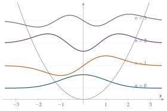

STEP III 1988、第7問
先に進む前に問題を読んでおこう。問題は STEP Support Programme の問題データベースにある： step.maths.org/questions/88-s3-q7
導入
ばねにつけたおもりは、どんなエネルギーでも振動できる。少し引いて放してもよいし、大きく引いて放してもよい。ところが1900年、プランク（Max Planck）は、熱い物体が放つ光の色を説明するには、振動する原子が一定の大きさの段階ごとに、特定のエネルギーしかとれないと考えるほかないことに気づいた。原子の尺度では、エネルギーは量子（quanta）として現れるのである。その25年後、量子力学（quantum mechanics）がその理由を説明した。
この問題にはその説明が含まれている。この微分方程式（differential equation）は、単位を取り替えると、ばねのようなポテンシャルの中にある量子的な粒子に対するシュレーディンガー方程式（Schrödinger equation）、すなわち量子調和振動子（quantum harmonic oscillator）の方程式になる。この方程式が無限遠で減衰するような性質のよい解をもつのは、エネルギーが \(n = 0, 1, 2, \ldots\) で番号づけられた特別な値をとるときだけであり、それらは等間隔に並ぶ。さらに、異なる \(n\) に対する解は互いに直交（orthogonal）する。すなわち、フーリエ級数（Fourier series）における \(\sin mx\) と \(\sin nx\) と同じように、それらの積の積分は \(0\) になる。量子振動子は、分子、固体、光の物理学の出発点である。
取りかかる前に
\(e^{-\lambda x^2}\) のような関数を推測として試すのが妥当なのはなぜか。\(x \to \pm\infty\) のとき、\(e^{-\lambda x^2}\) とその導関数はどうなるか。
\(|x|\) が大きいとき、方程式は \(y'' \approx \omega^2x^2y\) で支配される。一方、ガウス関数（Gaussian）\(e^{-\lambda x^2}\) は \(x\) が大きいとき \(y'' \approx 4\lambda^2x^2y\) を満たすので、\(4\lambda^2 = \omega^2\) ならば一致する。\(\lambda > 0\) のとき、ガウス関数とそのすべての導関数は \(x\) のどんな累乗よりも速く \(0\) に減衰する。したがって境界条件（boundary conditions）は自動的に満たされ、手間がかかるのは方程式に合わせる部分である。
順を追って解く
段階 1 基底状態
\(y_0 = e^{-\lambda x^2}\) を2回微分し、\(n = 0\) とした方程式に代入して、\(x^2\) の係数と定数項を比較せよ。
\(y_0' = -2\lambda xe^{-\lambda x^2}\) であり、\(y_0'' = (4\lambda^2x^2 - 2\lambda)e^{-\lambda x^2}\) である。\(n = 0\) のとき、方程式はすべての \(x\) について \[4\lambda^2x^2 - 2\lambda - \omega^2x^2 = -\omega\] が成り立つことを要求する。係数を比較すると \(4\lambda^2 = \omega^2\) かつ \(2\lambda = \omega\) である。\(y_0 \to 0\) となるように \(\lambda > 0\) をとれば、\(\lambda = \frac\omega2\) のとき両方が成り立つ。また、\(x \to \pm\infty\) のとき \(y_0\), \(y_0' \to 0\) である。■
段階 2 第一励起状態
\(y_1 = xe^{-\lambda x^2}\) について、\(y_1' = (1 - 2\lambda x^2)e^{-\lambda x^2}\) であり、\(y_1'' = (4\lambda^2x^3 - 6\lambda x)e^{-\lambda x^2}\) である。\(n = 1\) のとき、方程式は \[4\lambda^2x^3 - 6\lambda x - \omega^2x^3 = -3\omega x,\] を要求するが、これは同じ \(\lambda = \frac\omega2\) で成り立つ。ここでも \(y_1\) と \(y_1'\) は \(\pm\infty\) で減衰する。■
段階 3 恒等式
\(y_my_n' - y_ny_m'\) を積の微分法（product rule）で微分せよ。4つの項のうち2つが打ち消し合う。そのうえで、微分方程式を使って \(y_n''\) と \(y_m''\) を置き換えよ。
\(\dfrac{\mathrm{d}}{\mathrm{d}x}(y_my_n' - y_ny_m') = y_m'y_n' + y_my_n'' - y_n'y_m' - y_ny_m'' = y_my_n'' - y_ny_m''\) である。方程式から \(y_n'' = \bigl(\omega^2x^2 - (2n + 1)\omega\bigr)y_n\) であり、\(m\) についても同様である。よって \[y_my_n'' - y_ny_m'' = y_my_n\bigl[\omega^2x^2 - (2n + 1)\omega - \omega^2x^2 + (2m + 1)\omega\bigr] = 2(m - n)\omega y_my_n. \qed\]
段階 4 直交性
この恒等式を \(-\infty\) から \(\infty\) まで積分せよ。左辺はどうなるか。
各 \(y\) と \(y'\) は両端で \(0\) に近づくので、左辺の積分は \(\bigl[y_my_n' - y_ny_m'\bigr]_{-\infty}^{\infty} = 0 - 0 = 0\) となる。したがって \(2(m - n)\omega\int_{-\infty}^{\infty}y_my_n\,\mathrm{d}x = 0\) であり、\(m \neq n\) かつ \(\omega > 0\) であるから \[\int_{-\infty}^{\infty}y_m(x)y_n(x)\,\mathrm{d}x = 0. \qed\] \(y_0\) と \(y_1\) については直接確かめるのもやさしい。\(y_0y_1 = xe^{-\omega x^2}\) は奇関数（odd function）だからである。しかしこの恒等式は、関数を具体的に知らなくても、あらゆる組についてこのことを証明する。
振り返り
係数を比較する。推測した形を代入し、方程式がすべての \(x\) について成り立つことを要求すると、\(\lambda\) が決まった。
ロンスキアンの技法。組合せ \(y_my_n' - y_ny_m'\) の導関数では、2階導関数を方程式によって置き換えることができ、簡単な式が残る。この組合せはロンスキアン（Wronskian）とよばれる。
境界条件が境界項を消す。無限遠での減衰により、積分した左辺が \(0\) となり、それが直交性を与えた。
背後にある数学
1926年、シュレーディンガー（Erwin Schrödinger）は、量子的な粒子は波動関数（wave function）\(\psi(x)\) によって記述されると提唱した。ポテンシャル \(V(x)\) の中にあるエネルギー \(E\) の粒子に対して、波動関数は \[-\frac{\hbar^2}{2m}\psi'' + V(x)\psi = E\psi.\] を満たす。ばねの場合は \(V(x) = \frac12m\Omega^2x^2\) であり、\(x\) の尺度を取り替えると、これはちょうど問題の方程式になり、\(E = \bigl(n + \frac12\bigr)\hbar\Omega\) となる。\(\psi\) が無限遠で減衰する（つまり粒子がどこかに存在する）という物理的な要請は、これらのエネルギーに対してしか満たされない。これが量子化（quantisation）であり、数学から自然に導かれるのである。最低のエネルギーが \(0\) ではなく \(\frac12\hbar\Omega\) であることに注意しよう。量子振動子は完全に静止することが決してできない。この零点エネルギー（zero-point energy）は実在し、測定することもできる。液体ヘリウムが通常の圧力のもとでは絶対零度においても凍らないのは、このためである。

エルミート関数とスツルム–リウヴィル理論
一般の解は \(y_n = H_n(\sqrt\omega x)e^{-\omega x^2/2}\) であり、ここで \(H_n\) は \(n\) 次の多項式で、エルミート多項式（Hermite polynomial）とよばれる（図 8.6.1）。直交性はこの方程式に特有のものではない。方程式が適切な境界条件のもとで \((py')' + qy = -\lambda wy\) の形に書けるときはいつでも、異なる \(\lambda\) の値に属する解は、段階 4とまったく同じ議論によって直交する。これがスツルム–リウヴィル理論（Sturm–Liouville theory）（1830年代）であり、フーリエ級数の正弦関数（第 3.7 節）、太鼓の膜の振動、静電気学のルジャンドル多項式（Legendre polynomials）、水素原子の波動関数などを包括する。第 4.7 節 の固有値問題（eigenvalue problem）もその一例である。そこで求めた臨界値が固有値 \(\lambda\) であり、直交する関数はその系の自然な「モード」である。
思考のスキル
関連する方程式の2つの解が直交することを示すには、境界条件によって積分が \(0\) になり、しかもそれらの積の定数倍に等しくなるような、ある関数の導関数の形の式を見つけよ。
これは積分を直接計算するよりもはるかに強力である。解を具体的に書き下せない場合でも、すべての組について一度に通用するからである。
次の一歩
次の状態。\(\lambda = \frac\omega2\) のとき、\(y_2 = (4\lambda x^2 - 1)e^{-\lambda x^2}\) が \(n = 2\) とした方程式を満たすことを示せ。また、\(\int_{-\infty}^\infty e^{-\omega x^2}\,\mathrm{d}x = \sqrt{\pi/\omega}\) と \(\int_{-\infty}^\infty x^2e^{-\omega x^2}\,\mathrm{d}x = \frac{1}{2\omega}\sqrt{\pi/\omega}\) を用いて、\(\int_{-\infty}^\infty y_0y_2\,\mathrm{d}x = 0\) を直接確かめよ。
ほかのエネルギーはない。\(n\) を一般の数 \(\nu\) に置き換えて、\(y = e^{-\lambda x^2}\) を試せ。これがうまくいくのは \(\nu = 0\) のときに限ることを示せ。（実際、減衰する解が存在するのは \(\nu\) が0以上の整数のときに限る。）
正弦波。\(y(0) = y(\pi) = 0\) のもとでの \(y'' = -n^2y\) から出発し、同じ方法を用いて、\(m \neq n\) のとき \(\int_0^\pi \sin mx\sin nx\,\mathrm{d}x = 0\) となることを示せ。
はしご。\(y_n\) が方程式の解ならば、\(y_{n+1} = \omega xy_n - y_n'\) は \(n\) を \(n + 1\) に置き換えた方程式の解であることを示せ。これを用いて、\(y_0\) から \(y_1\) と \(y_2\) を作れ。（これは量子力学における「上昇演算子（raising operator）」である。）
さらに学ぶために
David Griffiths, Introduction to Quantum Mechanics（Cambridge University Press）。『量子力学入門』。大学学部の物理学の標準的な教科書であり、第 2章で調和振動子を扱っている。
Richard Feynman, QED: The Strange Theory of Light and Matter（Princeton University Press）。『光と物質のふしぎな理論』。量子力学の大家の一人による一般向けの解説である。
Mary Boas, Mathematical Methods in the Physical Sciences（Wiley）。『自然科学者のための数学的方法』。数学と物理学を学ぶ学生に向けて、エルミート多項式とスツルム–リウヴィル理論を扱っている。